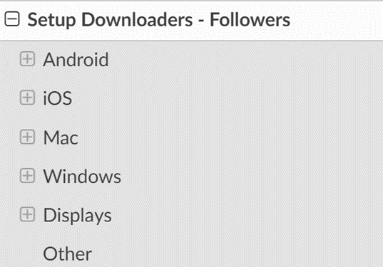
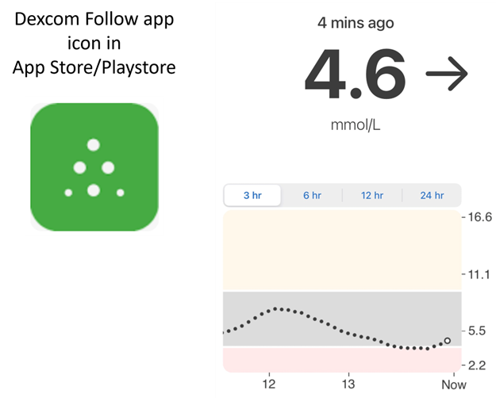
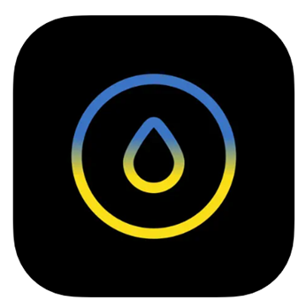
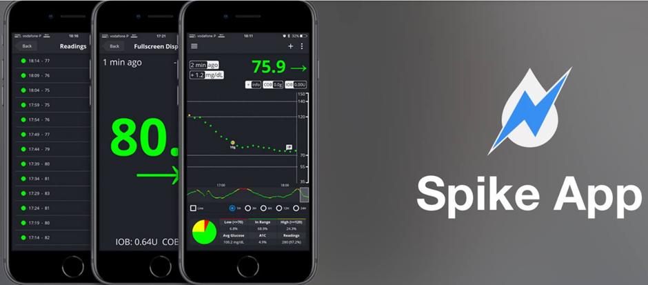
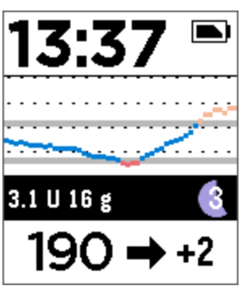

Following AAPS (no interaction with the AAPS system)
In addition to the range of possibilities available for remotely controlling and following AAPS which are described at remote control, there are several additional apps and devices which the community has developed, to simply follow numbers (glucose levels and other information), without interacting with AAPS.
A good overview of the extensive options available for following AAPS is at Nightscout follower webpage; if you expand the menu on the left-hand side:

The most common strategies used in combination with AAPS are explained in more detail below.
1) Smartphone apps
These are some of the main “follower” apps used by AAPS users. All of these apps are “free”:
A) Dexcom Follow (Android/iOs) B) Nightguard (iOs) C) Nightwatch (Android) D) xDrip+ (Android) E) Shuggah (iOs) F) Sugarmate (iOs) G) Spike (iOs)
A) Dexcom Follow (compatible with both Android and iOs devices)

● Dexcom Follow is compatible with a wide range of handsets (both Android and iPhone). Dexcom Follow can be used even if you are not using the official Dexcom app to receive sensor data.
● Many caregivers are familiar with Dexcom Follow, preferring its clear interface over something more complicated.
● Dexcom Follow is very good for teachers/grandparents and people who know very little about diabetes and sugar levels. It has customisable alerts (BG level, what sound to play etc). Alarms can be completely switched off if needed, which is very useful if you have a sensor which is still settling down and creating multiple fake lows.
setting up Dexcom Follow: how-to-guide
If you use the unofficial Dexcom app BYODA for receiving sensor data, you may be able to send invites to followers from within the BYODA app. You should also be able to send invitations to Dexcom Follow from Xdrip+ (settings - cloud upload-Dexcom share server upload, see instructions here:
https://xdrip.readthedocs.io/en/latest/use/cloud/?h=#dexcom-share-server-upload
However, some users have reported not being able to send invite emails to Dexcom followers from these third-party apps. In Xdrip+ the invite request may just result in the message “invite not sent”.
If you find it difficult to invite new Dexcom Followers from these 3rd party apps, then one solution is to install the official Dexcom G6 app, send the invite, and then uninstall the official app.
The steps to do this are as follows:
1) Install the official “Dexcom G6” app on any smartphone (Android/iPhone), this can be the Follower phone, if it is more convenient.
2) Log in with your Dexcom username and password, this is the same login details you would use for Dexcom Clarity, if you are already a current Dexcom/Clarity customer. If you don’t have a Dexcom login, there is the option to create a new login at this point.
3) Swipe through the introduction menus.
4) Add “no code” for the sensor code.
5) Under Transmitter SN select “enter manually” and enter any valid transmitter code (use one of your expired transmitter codes, if you know one, so it doesn’t interfere with the running of your current transmitter, they follow a specific format of certain numbers and letters: “NLNNNL” and only use certain combinations, so it’s easiest to use one you already know is valid).
6) Once the app is trying to find the transmitter and sensor, you will be able to invite followers: select the small three dots in the top left of the app, and add new follower. You can also use this if one of your followers has changed their handset and needs a fresh invite, here you can delete them from the follower list and resend a new invite email for them to use on their new handset.
7) On the Follower phone, install Dexcom Follow by downloading it from the App Store (iPhone) or Play (Android). Set up the Dexcom Follow app, and you will be prompted to open your email to find the invite to be a Follower.
8) You can now delete the official Dexcom G6 app.
For Dexcom Follow, the sensor data is then exported from the AAPS phone either directly from BYODA, or from Xdrip+, depending on which app you are using.
B) Nightguard (iOs only)

Pros (as reported by users):
● simple, user-friendly interface.
● Swipe button or shake phone to snooze alarms at different intervals ranging from 5 mins to 24 hours
● Customise alarms (high, low alerts, missed readings when no data for 15-45 minutes.
● Fast rise/drop over 2-5 consecutive readings (you choose). Can also choose the delta between two individual readings
● Smart snooze so doesn't alert if levels are moving in right direction
● There is a Care tab which appears to enable you to set a new temp target for a certain duration, delete the temp target or enter carbs.
Cons (as reported by users)
● Only available for iOS
● The TT shows as 5 mmol regardless of which TT level is set
● Never shows Temp Basal rate even though it shows TB
C) Nightwatch (Android only)

● Nightwatch markets itself as a Nightscout client and monitors the user’s Nightscout glucose levels on either Android phone or tablet.
● The app can be downloaded from Google play and displays BG data in real time.
● The user can be alerted with customised noisy low and high alarms set.
● BG data can be viewed in either mmol/L or mg/dL.
● It requires Android 5.0 and up.
● It has a dark Ul, large readings and buttons, designed for usage at night.
D) xDrip+ (Android only)
Followers can be alarmed by using the xDrip+ in follower mode. xDrip+. (mainly BG values and alarms)
E) Shuggah (iOs only)
Historically, it has been difficult to get hold of the app of the iOs or "Apple" version of xDrip+ (known as xDrip4iOS), in order to follow AAPS.
A free, modified version of xDrip+4iOs has become available as Shuggah**. This can be downloaded directly from the Apple App store on iPhone or tablet.
:::{admonition} Further detail about how to attempt to obtain the original xDrip4iOS app :class: dropdown
xDrip4iOS is an Apple version of xDrip+, and the XdripiOs Facebook group is the main community support. xDrip4iOS can connect to many different CGM systems and transmitters and display blood glucose values, charts and statistics as well as provide alarms. It can also upload to Nightscout or act as a follower app for Nightscout. However, it is difficult to actually get the xDrip4iOS app for your phone.
"How can I get xDrip4iOS on my iPhone?" There are two options: 1. If you have a Mac and an Apple Developer account (99 EUR/USD per year) then you can build your own xDrip4iOS by following the instructions below:
https://xdrip4ios.readthedocs.io/en/latest/install/build/
If you want, you can then become a "releaser" and share a Personal Testflight with up to 100 other people to help them: https://xdrip4ios.readthedocs.io/.../personal_testflight/
- You join the XdripiOs Facebook group and monitor the posts… wait for somebody to offer an invitation to their Personal Testflight releases in the group.You are not permitted to ask for the app (read their group rules).
An easier solution is therefore to download the Shuggah app.
:::
Shuggah
App:


"What is Shuggah?" A group of Ukrainian developers took the project code for xDrip4iOS (which is shared publicly on Github) and released it on the App Store under a business account (the app is free, and their intentions are good). The app had to be slightly modified to add a privacy statement and disclaimer to get past the review, but the rest of the app should be the same as xDrip4iOS. The Shuggah release is not officially managed by the xDrip4iOS developers so it cannot be guaranteed that it will function in the same way as xDrip4iOS, or that Apple won't remove it from the App Store at some point.
The XdripiOs Facebook group supports xDrip4iOS, Shuggah, as well as the Apple Watch app.
F) Sugarmate (iOs)


Sugarmate is available to download onto iPhones from the App store. Sugarmate is compatible with: ● Apple iPhone (Requires software version 13.0 or later) ● Apple iPad (Requires software version 13.0 or later) ● Google Android (Save web app to your homescreen)
It has been reported by users of Sugarmate that it can be used with Apple CarPlay in the USA to display glucose readings when driving. It is not yet established if this is possible in countries outside the USA. If you know more about this, please add details in here to the documentation by completing a pull-request (link) which is quick and easy to do.
G) Spike on iOS

Spike can be used as a primary receiver or as a follower app, providing BG, alarms and IOB and more. Whilst the website is no longer biDetails are here. Details and support can be found on Facebook and Gitter](https://gitter.im/SpikeiOS/Lobby).
To install Spike, see here
2) Smartwatches for Monitoring of AAPS (full profile data, or glucose-only) where AAPS is running on a phone.
Smartwatch options which also allow interaction with AAPS are described in the "remote control" section of the documentation.
There are a wide range of affordable smartwatches which can provide display only. If you are using Nightscout, then a good overview of all the options is here
Here we summarise some of the follow-only watch options popular with AAPS users:
a) Xiaomi and Amazfit watches
A developer called Artem has created xDrip integration for various smartwatch models, mostly for Xiaomi (e.g. Mi band) and Amazfit brands:

You can read more about them, including how to set-up at his website here. The advantage of these watches is that they are small and relatively affordable (the Xiaomi Mi Band 5 has a RRP of £39.99 GBP). They are a popular option especially for kids and those with smaller wrists to wear.
b) Pebble watch


Pebble watches now discontinued) were on general sale from 2013 - 2016, and may still be available second-hand. Fitbit took over Pebble’s assets. Pebble users can use the Urchin watchface to view Nightscout data. Displayed data options include IOB, currently active temp basal rate and predictions. If open looping you can use IFTTT to create an applet that says if a Notification has been received from AAPS then send either an SMS or pushover notification.
c) Bluejay GTS watch

This is a unique piece of technology which can receive glucose data directly from the Dexcom G6 transmitter. It is not widely known that a Dexcom G6 transmitter actually broadcasts the current glucose data on two separate channels, a phone channel and a pump channel. The Bluejay GTS watch runs a modified version of Xdrip+ software, and can be set to receive glucose data on either channel, so if **AAPS ** is using the phone channel, then the Bluejay GTS watch can use the pump channel.
The Bluejay GTS watch is small, waterproof and reasonably affordable (currently £115 GBP) and can be shipped internationally from the UK. The key advantage is that it is currently the only watch which is completely independent of both the phone and the looping system. So, for example, if you disconnect the pump and the AAPS phone at the beach or flume park, and are out of range of the AAPS phone, you can still get readings from the Dexcom G6 directly to the Bluejay watch.
Reported disadvantages are that it doesn’t always pickup a reading every 5 min, and the battery is not replaceable. The Bluejay GTS watch runs a modified version of Xdrip+ software, and it currently doesn’t work with other Dexcom versions (G7) or Libre sensors.
d) Apple watch
Check Nightscout on your watch:
Options include Nightguard, sugarmate, Gluco-Tracker, nsapple and Loop Follow.
3) Devices for following AAPS
Devices include: A) M5 stack/M5 stickC B) Sugarpixel C) PC (Teamviewer)
A) M5 stack

The M5Stack is a small box which can be programmed for many applications, one of which is displaying sensor glucose values and trends, IOB and COB. It is in a plastic box, equipped with a colour display, micro SD card slot, 3 buttons, speaker and internal battery. It is a great blood sugar monitor and is relatively easy to set-up if you have a Nightscout account. Users typically run it on their home wifi, but some users report using it as a display when motorbiking, by running it off a phone wifi hotspot.
B) Sugarpixel
SugarPixel is a device for secondary glucose display alert system for continuous glucose monitoring that connects with Dexcom app or Nightscout app on the user’s smartphone. The device displays real time blood sugar readings. This CGM hardware monitor benefits from random tone generation audio alerts (which are incredibly loud), vibration alerts for hearing impaired, customisable display options and native multi-user following.


● SugarPixel has multiple display options in mg/dL and mmol/L to suit the user’s needs with colour-coded glucose values. ● The standard face displays BG, Trend Arrow, and Delta. Delta is the change + or - from the last reading. ● SugarPixel can be customised for use in low brightness with the BG and Time face to see the user’s BG reading and current time on the user’s nightstand. ● SugarPixel’s xolour face utilises the entire display to show a single colour representing the BG value. This enables the user to see BG readings at a distance through the window while outside playing in the backyard, patio, or pool. ● The Big BG face is useful for nightstand users who wear glasses or contact lenses.
C) PC(Teamviwer)
Some users find a full remote access tool like TeamViewer to be helpful for advanced remote troubleshooting.